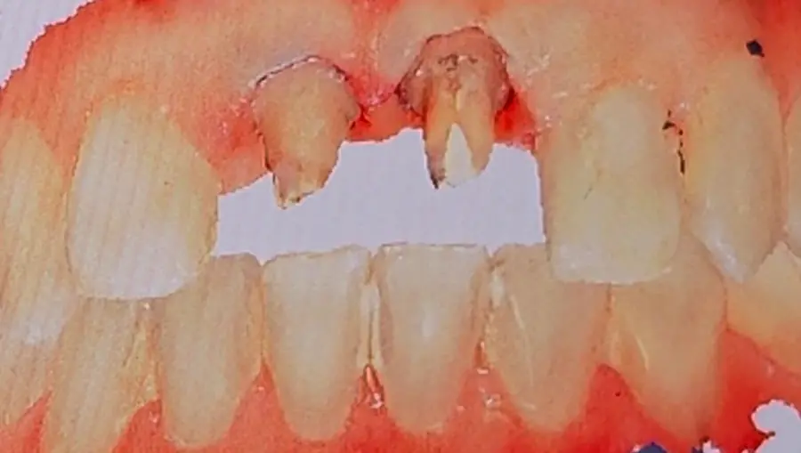

نسخه استخراجشده؛ ترجمه یا تأیید علمی انجام نشده است. وضعیت: captured
بیمار از فرم و کانتور دو روکش قدامیاش ناراضی است و لثهی اطراف ایمپلنتها هم التهاب دارد. محیط پر از خون و التهاب است. طبق روال، نخ میگذاری و مایعات را کنترل میکنی؟

وقتی بیمار از فرم روکشهای قبلی ناراضی است، روند مشخص است: روکش را خارج میکنی و یک روکش موقت اصلاحشده در دهان میگذاری. پس از اینکه بیمار فرم و کانتور جدید را طی یک مدت مشخص تأیید کرد، به لابراتوار میگویی روکش نهایی را بر اساس همان تراش قبلی بسازد (یا اگر تغییر خاصی در کانتور مدنظر است، اعمالش کند). چون تراش تغییری نکرده، کار نسبتاً سرراست پیش میرود.
در کنار نارضایتی از فرم، بافت نرم اطراف ایمپلنتها ملتهب بود و در این شرایط دستکاری بیشتر بافت به صلاح نبود؛ رفتن سراغ نخگذاری و کنترل مایعات میتوانست کار را بدتر کند و بهبودی را به تأخیر بیندازد.
تراش اصلاح نشد؛ با توجه به شرایط بافت نرم، نه نخگذاری شد و نه تلاشی برای کنترل مایعات. لابراتوار در مواجهه با این وضعیت ناچار شد مارجینهای روکش موقت را کمی کوتاهتر بسازد.
حالا که التهاب برطرف شده و از کانتور رضایت هست، تفاوت این کیس با کیس روتین خودش را نشان میدهد: دیگر نمیشود به لابراتوار گفت «از روی همان تراش و اسکن قبلی کار را پیش ببر». برای کار نهایی باید:
گاهی برای رسیدن به نتیجهی ایدهآل کلینیکی باید یک مرحله به بافت نرم زمان داد و آگاهانه از پروتکلهای روتین فاصله گرفت؛ به شرط آنکه در فاز نهایی، همان اقدامات حذفشده کامل انجام شوند.